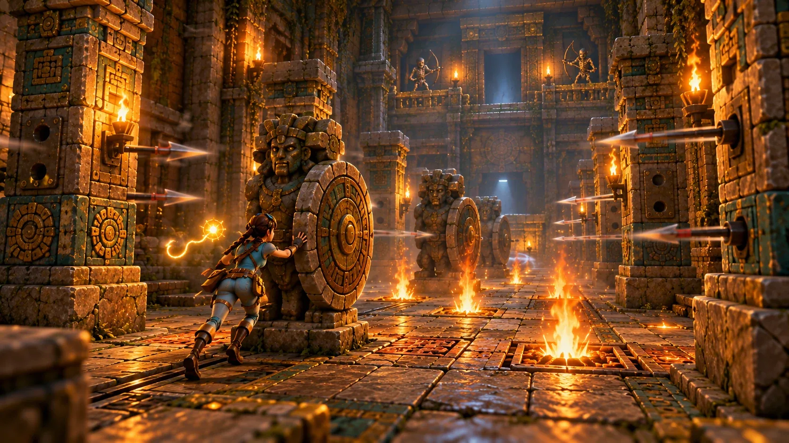

Regel 1
Ein Trick pro Reihe
Bröckelplatten, Trugböden und Felsplatten sind Tricks. Jede Reihe hat höchstens einen, also hat jede Reihe eine ehrliche Hälfte.

Start / Spieltypen
Spieltyp · Bauen und laufen
Bau in sechzig Sekunden einen Fallenabschnitt und lauf dann durch die aller anderen.
Die Erbauer des Tempels waren Fallenbauer. Jetzt bist du einer.
Jede Runde bekommt jeder Spieler einen Abschnitt eines Tempelgangs und sechzig Sekunden, um seine Fallenplätze zu füllen. Dann laufen alle durch den ganzen verketteten Parcours, den eigenen Abschnitt eingeschlossen. Punkte fürs Durchkommen, Punkte fürs Erwischen deiner Freunde und ein Bonus für etwas, das schwer und fair ist.
Eine Runde
Geh zu einem Platz und drück Interagieren, um durch die Fallen zu schalten. Sie funktionieren schon beim Bauen, also testest du sie an dir selbst.
Der Tempel stimmt die Timings so ab, dass jede Bahn schaffbar ist, und füllt leere Bahnen auf.
Lauf alle acht Abschnitte der Reihe nach. Erwischt? Zurück an den Anfang dieses Abschnitts.
Rundenpunkte, das Podest und die gefürchtetste Falle: „Lenas Trugboden, fünf Erwischte.“

Die Auswahl
Jeder Abschnitt hat sechs Bodenplätze in drei Reihen und zwei Streifen dazwischen. Ein Budget von 10 Punkten wächst im Lauf eines Matches auf 14, also werden spätere Runden gemeiner.
| Falle | Kosten | Woran du sie erkennst |
|---|---|---|
| Stachelleiste | 2 | Rot gespitzte Schlitze, ein Klicken, bevor sie steigen |
| Feuerdüse | 2 | Ein Rußring und ein Rauchstoß |
| Bröckelplatte | 2 | Haarrisse; sie fällt, sobald du draufsteigst |
| Trugboden | 3 | Eine etwas hellere Glyphe, die beim Trommelschlag nicht leuchtet |
| Felsplatte | 3 | Eine erhöhte Platte und ein Seil über dem Ausgangsbogen |
| Pfeilwand | 3 | Pfeillöcher und ein Klicken vor jeder Salve |
| Pendelklinge | 3 | Immer zu sehen, immer in Bewegung |
Die Fairness-Maschine
Regel 1
Bröckelplatten, Trugböden und Felsplatten sind Tricks. Jede Reihe hat höchstens einen, also hat jede Reihe eine ehrliche Hälfte.
Regel 2
Wenn zwei Zeitfallen eine Reihe teilen, verschiebt der Tempel eine, damit sie nie gleichzeitig gefährlich sind.
Regel 3
Deine Fallen erwischen auch dich. Also baust du ein Rätsel mit einem Trick, keine Wand.
Der Bonus „Fair und Fies“ belohnt eine Bahn, die jemanden erwischt hat und trotzdem von der Hälfte der Läufer geschafft wurde.
1 Spieler
Lauf acht von Hand gebaute Tempelbahnen gegen die Uhr, für Gold, Silber oder Bronze.
1 Spieler
Bau deine Signaturbahn und speichere sie. Sie füllt leere Abschnitte auf den Servern anderer Spieler: „Gebaut von Tomas, letzten Dienstag.“
In die Reihe
Ihre Fairness-Regeln werden zu den Anti-Grief-Regeln eines Keeper-Modus in Trap Galleries, in dem ein Spieler die Fallen live auslöst.